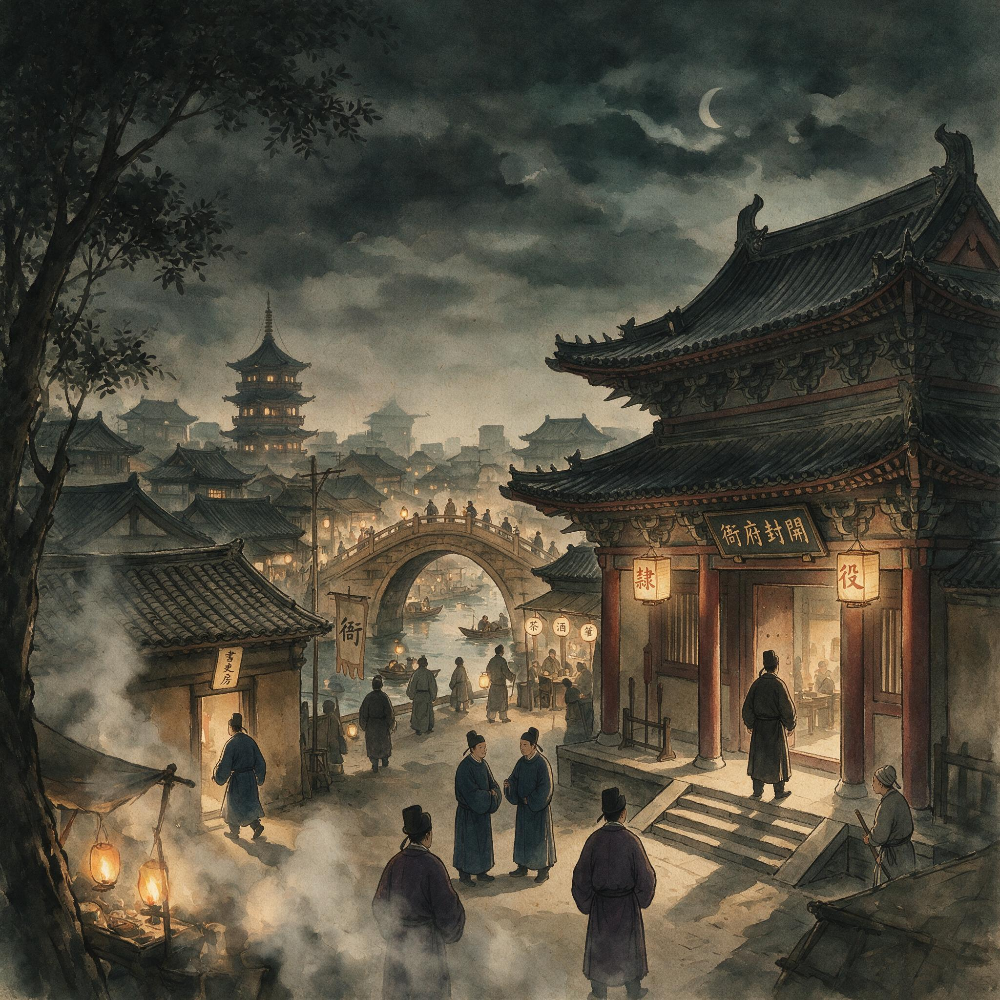

第 1 章
衙前灯火
秋夜入衙的第一件事，是脚底踩进了前院砖缝里的积水。水不深，刚好漫过薄底布鞋的鞋帮，凉意顺着脚面往上一窜。怀里的那叠税册随之往下一沉，贴司忙用下巴抵住最上面一页的边角，才没有让穿堂风

衙前灯火：历史出版插图
AI 生成插图，非史实影像。
把纸页掀散。
元丰年间的这个秋夜，他第一次真正踏进官署后院。侧门在身后合上，门板擦过石阶的声音短促而闷，像有什么东西被推回了原位。白日里他来过一次。三日前补入县衙时，由一名手分领着在大堂东侧的吏舍外站了片刻，听了几句吩咐，领到一方旧砚、两支秃笔和半刀粗纸。
那时的县衙敞亮，仪门大开，两侧吏舍的门板都卸了下来，阳光一直照到正堂台阶下的条石上。知县升座的影子落在大堂深处，远远看去只是一个端坐的轮廓，连面目都分辨不清。他没有资格再往前多走一步。补入贴司这件事本身也不见隆重，手分只把簿子一合，指了指东厢，说：“明日再来。”
入夜之后的衙门要窄得多。仪门已经合上，门扇背后落了栓。从侧面小门进去，廊庑里只挂着两盏灯笼，一盏在靠近二堂拐角处，一盏悬在签押房门外。灯焰缩在纸罩里，黄黄的一团光，照不到三尺之外的墙根。其余地方全陷在黑暗里，只凭房屋轮廓和脚下石阶的深浅来判断方位。
他贴着墙走，肩膀不时擦过灰皮剥落的砖面，蹭下一层细灰。廊柱间有风，不是从正门进来的，是从后院仓场方向折过来的，带着一点陈谷子和烂木头的潮气。这条廊子练得很长。白日里，各处房科的吏员、递状的百姓、送文书的铺兵都从这条廊上过，人来人往，脚步杂沓，谁也不会多看两边的墙一眼。此时只他一个人走，布鞋踏在砖上的声音被墙身来回折返，像有另一个人在不远处跟着。他渐渐放慢步子，每一脚都踩实了才抬起来。
税册外套着一层油纸，已经让手臂内侧的体温焐得发软。三日前领来的差事里没有夜间入衙这一项，今夜是签押房那边临时捎来的话：把白日誊清的税册送过去，顺道听差。签押房的灯先从纸窗里渗出来。
那扇窗不算大，糊着发黄的窗纸，几处破洞用旧公文纸补过，边缘翘起。灯光从破孔里漏出，在对面墙上投下几个明暗不齐的光斑。他走近时，听见笔尖在纸上划过的细响，间或夹着一两声竹制笔套碰在砚沿上的轻磕。这声音不大，但在夜里极清楚，像整座衙门只剩这一间屋里还有人醒着。
门半掩着。他侧身进去，先看见的是一张长案。案面是几块老榆木板拼的，年岁久了，中间凹下去一道浅槽，正好容下一管笔、一方砚、一叠纸。油灯就摆在案角，灯盏是粗陶的，盛着半盏油，灯芯挑得不高，火苗一颤一颤。
桌前坐着的楷书手正低头誊录，笔管握得紧，腕子悬着，一笔一画地往下写。那人穿一件灰青的窄袖旧衫，领口磨得发亮，袖口上套着一副露指的半截套袖，为的是不叫汗湿沾了纸。听见他进来，楷书手没有抬头，只说了句：“放右首案上。”
贴司照做了。税册按乡排列，最上面一本是城北双桥乡的底册，封皮上贴着一条红纸，写着“元丰”两个小字。他把整叠册子放稳，退到离案两步远的地方立住。这时才看清案面右首还摊着几册已经誊好的副本，纸色较新，墨迹还亮着，显是刚写完不久。那份副本旁边压着一块木条，木条上刻着几个浅浅的字，大约是某个房科的记号。案面上另有一个竹制笔屏，一支细楷笔斜搁其上，笔尖已干得发硬，似乎前一个人用了没有及时洗净。
楷书手写完一页，把笔搁在砚边，搓了搓手指。他这才看清此人右手中指第一关节处结着一层厚茧，指侧染着洗不净的墨痕，已经嵌进指纹的沟里。楷书手抬头扫了他一眼，目光在他脸上停了一瞬，又落回案上的税册。那目光不凶，也没有多少暖意，只是认一认人。“新来的贴司？”他问。“是。”
“先把各乡册数点一遍。少一页，明日补不上来。”
贴司应了一声，走到案前，开始按乡序翻点。册页在灯下泛着黄，有些页角被虫蛀过，留下细密的缺口。他翻得很慢，每一页都要看准了数目才放过去。油灯的热气烘着额角，烤出一层薄汗。他知道这里没有人会告诉他具体该怎么做。
签押房里每个人都手里有活，他得自己看、自己问、自己记。案面靠里的一侧放着一只小木盒，盒盖半开，里面是几段薄薄的竹片，另有一把小刀，刃口窄而短，刀尖已经磨圆。旁边是半碟干掉的墨，几只粗细不一的笔套，一团用来吸墨的旧棉。再往里，靠墙立着一口小柜，柜门虚掩，露出几角发黄的废纸。这些东西不经过谁特别安排，却都放在了一个人多年来伸手可及的地方。
贴司看见小刀下面的木案上有一道细微的刮痕，顺着刀锋的方向，已经磨出了浅沟。他翻点的过程中，楷书手重新提起笔，蘸墨，继续誊录。底册摊在左侧，新纸铺在右侧，中间用一根铜镇尺压住。每抄一段，他都要抬头看一眼底册，再把目光移回新纸。抄到一处地方，他忽然停住了。
底册上有一个字被前人的笔误写得极潦草，旁边又有细笔点去的痕迹。楷书手没有直接照抄，而是先用笔尖在废纸上试了试墨，再依着前后文补出一个形状相似、笔画清楚的字。补完以后，他端详片刻，又用同样的笔势把相邻几个字也描了描，使新补的字不显得孤单。这个动作不大，贴司却看得入神。
那不是一般的抄写。底册上的字并不天然可信，每一页被送进签押房以前，已经过了多人之手，有涂改，有补缀，有重新装订过的线脚。楷书手要做的，是把那些被改过的地方改得看起来像从来没有改过一样。墨色、笔势、行距，都是他手中的材料。
这是贴司第一次见到“文书拟态”的活样。它不在讲法律的堂上，不在知县的判词里，只在油灯下一笔一画的修饰中。底册是旧的，新纸是新的，可是经过这一番操作，旧字和新字之间的接缝被抹平了。日后有人从架子上抽出这一册，只看见整整齐齐的墨迹，不会知道哪一处曾经错漏，哪一处又是后来补入。
帝国对田亩、丁口、赋税的掌握，从最末梢的这张纸上开始变形，而变形的手势偏偏是最平静不过的誊录。他翻完一遍，册数不缺，向楷书手回了一声。楷书手点点头，下巴往东边一偏，说：“架阁库那边若还亮着，去看看门锁了没有。若没有，喊一声。”语气平常，像在吩咐一件顺路的小事。
架阁库在签押房再往东去，中间隔着一个窄窄的夹道。门比寻常房间的门要厚，包着一层铁皮，门鼻上挂着锁。开门时锁是敞开的，锁舌缩在一边，似乎上一人刚走不久。贴司没有被安排进库，只在门外站了站。
透过门缝望进去，库内并无灯，借着身后签押房透来的微光，只看见一排排木架的黑影。架子高及房梁，每层都码放着卷宗，大小薄厚不一，外面一律用麻绳捆扎，绳结朝外，垂着纸签。签上写着字，约莫是按千字文排的号。天地玄黄，宇宙洪荒，隔几层就是另一排。
有的签已经发黄发脆，边角翘起；有的签近年在旧签旁另贴一张小字，大概是同一格内加了新卷。架阁库的门虽然开着一条缝，却比上了锁更让人不敢贸然进去。
他站在夹道里，离门半步，鼻间闻到一股陈年纸墨混合着樟木的气味。那气味厚实、干燥，从门缝里一丝一丝地渗出来，像书页烂掉了，又被人用香料压住。贴司说不出其中层次，只觉得这里不像是空房子，倒像住着什么沉默的东西。
那一排排木架在暗处立着，不是等谁来参观的陈列，而是被反复使用过的现场。他知道那里面每一捆案卷都对应着一桩已经发生或尚未了结的事情。白日里有人来查，夜里有人来取，取出之后又放回，放回之后便不再说话。案卷不会自行消失，但会慢慢发脆、虫蛀、散线，最后又被某个手分用新的麻绳重新捆好，重贴一张签。
他退回廊上，没有再往东走。远处二堂的方向似乎有一点光，又似乎只是灯笼的光被风一晃，在拐角的墙上划了一下。他并不急着去后堂，脚速自然放得慢，回到签押房窗下时，听见里头的笔声已经停了。他本以为楷书手歇了，走近看，那人只是换了一页纸，把已经抄好的往右移开。
新铺的一页下方压着一条红格纸，抄的不是税册，而是别样文簿，格式也不同，顶头空了两个字，像是预备在上司名衔之前留的抬头。帖司没进屋，只在窗前立了一小会儿。他想，签押房夜里并不只做白日的续录。白日里被催促、被检查、被各房推来改去的文牍，到了夜里都要变成另一副面貌：干净的、整齐的、合乎某一套格式的。这番修饰只有在灯下才做得专心。
往回走时，廊庑的另一头传来碗筷碰撞的轻响。不是食堂里那种成片的声音，是几只粗瓷碗搁在石阶上的磕碰。几个杂役蹲在二堂西侧的山墙下，围着一只木桶。木桶里盛着热粥，热气在秋夜里升起来，白花花一片，散到墙头就没了。
一个年长的杂役用木勺分粥，盛到碗里，再捏一撮咸菜搁在粥面。其他几个人接过碗，并不说话，各自寻了墙根坐下，吃得极慢。他们多数白日里在衙门各处奔走，送信、挑水、扫院、搬炭，夜里回到这里吃一口热食。灯在这里没有，只有一桶粥、几只碗和几个低声嚼食的人。
贴司从他们身边经过时，那个分粥的老杂役抬起眼，拿木勺往桶沿上磕了磕，落下一滴稠粥。这个动作没有什么含义，不过是一个人做惯了的习惯。贴司走远几步，听见背后有人用极低的声音问了句什么，另一个人回了两个字，声音散在风里，听不真切。墙根下面的几个人并不在意有个新贴司走过。
他们的衣裳比楷书手更旧，有的袖肘上打着一块颜色不一的补丁，有的腰上系一条麻绳，绳上拴着短刀、火镰和一只黑布小袋。他们既是衙门的杂役，又像衙门门前街市上随时可以雇来的短工。宋朝县衙里有相当一部分杂事并不出自正式员额，而是由应役、雇募和临时差派的人拼凑完成。这些人中的许多，白天并不全在衙门里，只有到了夜晚，才从仓场、马厩、炭房和门房各处聚到这一桶粥前。
这里面没有谁是闲着的。送信的要把明早要用的铺兵簿再核一遍，看炭的要保证二堂那边的铜炉不断火，扫院的天不亮就得把前天打翻的纸灰清干净。但此刻他们不急着说这些。热粥很稀，碗里照得见人影，咸菜只够就半个碗口。
他们吃得不紧不慢，像在让这一天的辛苦慢慢退下去。如果单看这几个墙根下的人，县衙所谓“官署”的面目几乎不见。没有公服，没有仪仗，没有高悬的匾额，只几个被秋夜凉气裹着的人，围住一桶往上冒热气的粥。可是白日里衙门要开门，要接状，要传唤，要发差，缺了哪一个，到时要来的人就得多等半日。贴司没有停步。
再往前，过了二堂的侧门，就是后堂。那里也亮着灯，比签押房的那盏要亮些，窗纸上映得出屋内陈设的轮廓：靠墙一张矮几，几上一只烛台，烛火把两个人的影子放得很大，一个坐在左边，一个斜斜地立在右边。坐着的那个身量不高，戴一顶巾，穿深色袍子，大约是知县。站着的稍向前倾，一手扶着几沿，一手指着几面展开的什么东西。
贴司原本只该把税册送到签押房，转身便可回吏舍。但经过后堂窗外时，他的脚步不自觉地慢了下来。不是因为窗内的人，而是因为窗内那件东西。借着烛光，他看见几面上摊开的是一张图，图纸已经泛黄，四角用镇纸压着。
图上画的是田亩，弯弯曲曲的细线勾出垄沟、田埂和一条斜穿过境的小路。知县的手指落在一处，停了片刻，又移向另一处。押司的手跟着指过去，嘴里说着什么，声音压得很低，只偶尔有几个字从窗缝里挤出来。贴司听到了几个词。旧界。水潭北。碑。四至。原契。这些词单独听都不陌生，连在一起却像几句暗语，要从那张图上的线条里对出位置，辨出年代。
他不是没有听说过田产纠纷。乡里两家争一条田埂，能从春争到秋，从本年卷宗争到十几年前的旧册。可是今夜被知县和押司摊在灯下的这桩，似乎并不只是田埂宽窄的事。几亩薄田、一块界碑、一份已经对不上的原契，竟要县衙后院留灯到此时。
他听见押司声音略微沙哑，大约说了一句旧界原来在水潭北面，如今水潭干了，界址没有人再指得清。这些不是原话，只是从几个断续字音里补出来的大意。知县没有立刻接话，只把身子往前倾了倾，似乎要把图看得更仔细些。过一会儿，他问了一个很短的问题。押司摇了摇头，摇得并不明显，只是肩头动了一下。
接着又低声说了几句，贴司只捕捉到另两个词：四至、上手契。其余的都模糊在蜡烛跳动的影子里。他没敢再听，退后两步，折回廊上。脚下走得快了，鞋底带起细小的风，方才沾湿的鞋面已经有些发硬，磨着脚背。回到签押房门外，楷书手已经又伏在案前，笔尖在纸上走得均匀。他一时间不知道还该不该进去。税册已点清，押司不在此处，他一个小小贴司，若擅自进签押房去问下一步，怕招来白眼。可若就此回吏舍，又怕明日有人说他偷懒。正站着出神，签押房的门从里拉开了一条更大的缝。楷书手偏过头，看见他还立在廊下，便说：“把前一日抄的户等簿抱回吏舍去，明日一早送来。用过了就还。”
贴司这才知道自己夜里还有这一桩差事。他唯唯应下，进去按楷书手指的位置取了一册薄薄的簿子，抱在怀里，退了出来。出门时他回头看了一眼架阁库的方向，铁门已经关上了，那把敞着的锁也重新挂上。
吏舍在前衙东侧靠墙的一排平房里。屋子里没有点灯，同屋的两个贴司已经睡下，呼吸声此起彼伏。他摸索着找到自己的铺位，把税册和户等簿放在枕边靠墙处，和衣倒下。屋顶有一处瓦片松动，仰面躺着时能看见极小的一线天光，不亮，只够分得清哪边是墙、哪边是梁。
他躺了一会儿，没有睡着。户等簿的封面又旧又薄，被他抱了一路，已经沾了体温。他知道这册簿子明日一早要交回去，今夜他不过是经手。
它跟着他回来，不是因为他有权，而是因为有人差他。这一层转手，正是贴司日常的全部：东西从他手里过一遍，便算是参与了一件事。事情本身并不属于他，却在他手里留下细微的印痕。簿子的边角被夜风吹凉之后，又慢慢暖回来。他翻个身，枕边那册税册最外面一页被顶得翘起，他伸手按平，纸页发出极轻的一声响。
夜慢慢深下去。后堂的烛火隔着两重院落，在这里是看不见的。但知县和押司站在那张田图前的影子，却像糊在半旧的窗纸上一样，留在他眼前。
他知道他们商议的是一桩田产纠纷。做贴司不过三日，已经不止一次听人提起“王屠夫家的地”这几个字。具体怎么争，争了多少年，他不清楚。那些被反复调阅的旧契、被半夜展开的地图、被压低声音说出的旧界，指向一件至今没有断下来的事情。
这桩纠纷不会在今晚解决。今晚它只是被摊开、被指认、被暂时搁回原处，如同架阁库的卷宗一样，从一只手掌传到另一只手掌，再被放回某个特定的架格。它没有消失，只是换了一个待查的位置。
明早会有人再去找上手契，再有人去翻某年的鱼鳞图册。到那时，这桩纠纷又会回到白日的前衙，变成堂上听得到的争诉和堂下记不完的笔录。他此时才开始明白，县衙里的位置是与这些动作长在一起的。签押房里的楷书手如果不在灯下誊录税册，明日发往各乡的催科文书就少了一层最基础的依据；
架阁库如果没有人记着哪一类案卷放在哪一排架格，再多的案卷也只是一堆发黄发脆的纸；廊下分粥的杂役如果在夜里各自散去，这处官署便连一口热食都凑不齐。把县衙撑到深夜的不是政令，而是这些人在各自的位置上重复做着的琐事。
政令从州衙下来，落到县衙门前就已不是原来的模样；再落到这些人的案头，它要经过更多次拆解、抄录、分派。北宋的地方行政，从来不曾靠一纸命令直达乡村。
它靠的是层层转手：贴司送到签押房，楷书手誊清，手分核对，押司过目，知县用印，杂役递送。每一道转手，都在纸上留下或明或暗的改动。灯火下那些被修饰过的字句，就是制度落到民间的第一层折损，也是第一层修复。
有人会说，县吏的这种自主空间，是制度有意留下的弹性。没有给他们足额的俸禄，便默认他们从经手的文书和案子里找补；没有把每一道程序都定死，便允许他们在格式之内自行润色。这种看法不无一点根据。宋代的官制末端确实留出了大量并没有写在条格上的空隙。
可是在分粥的杂役这里，在誊录的楷书手这里，那些空隙更像制度供不起的部分。不是朝廷预先设计好了容忍的尺度，而是州县面对着差事多、员额少、钱粮不足的局面，不得不让这些人用自己的方式把差事办下去。所谓“弹性”，大半是县衙自己长出来的肉芽，不是朝廷画好的线。肉芽包住了伤口，却也让伤口不再清洁。
他闭上眼睛，不再去想州衙与朝廷的事。眼前只剩后堂那扇窗。窗纸上的人影，已经由两个变成了两个半，大约是押司弯下腰去，用手指在那张图的一条线上比划。又过一会儿，人影变短，似乎知县站起来，走到几前，把镇纸挪了个位置。
这些变化只能看到，听不见。他的耳朵捕捉到的只有自己身边另一个贴司翻身的响动。那人把被子裹得更紧，呼吸重新均匀下来。
门外起了风。风从廊下穿过，摇晃着那两盏灯笼，灯罩打在柱子上，发出轻微的木碰声。吏舍里依然黑着。贴司把户等簿往枕边又推了推，怕半夜翻身压出折痕。簿子是明日要交差的，不能破损。他的手离开封面，指尖带着一点淡淡墨味。
他翻了个身，侧过脸对着墙。墙皮上有一块潮斑，形状像一张摊开的手掌。白日里他见过这样的田产纠纷如何被搬上大堂：两家人各执一词，一个说这块地从祖上就是自己家的，一个说对方趁水潭干涸挪了界石。争到最后，两边都拿不出过得硬的原契，只能跪在阶下等知县发话。那样的场面他在入衙三日内已经见过一回。
县官并不急着断，只命手分去调旧档，改日再审。当时他不明白为什么一桩看着简单的田界之争要拖这么久。今夜见了后堂里那张摊开的田图，又听见押司断断续续说出的旧界、四至、上手契，才明白事情根本不在堂上那几句争执里。
田图上的线不是画出来的，是从几十年、几家人的上手契里一条一条对出来的。哪一块地旱了，哪一条水沟改了道，哪一个界碑被人搬了，都会让图上的线偏离原处。而这些偏离，只有架阁库里那些发脆的旧册能够证明。证明的过程也不在知县的判词里，而在押司、手分和楷书手夜复一夜的调阅、核对和誊录中。
他忽然觉得，后堂那扇窗里的两个人不是在商量一桩纠纷，而是在测量一个已经消失了的现场。水潭干了，碑也不见了，图上的旧界于是变成了一条没有实物的线。这条线要重新落到地面上，得先回到纸堆里去找。找得越久，这桩纠纷就越不会在今晚结束。
他这样想着，耳边的风声小了下去。他想起签押房那盏灯下，楷书手补写底册时的动作——用废纸试墨，再依着前后文补出一个笔画清楚的字。那一笔补下去，旧错和新字之间就没有了接缝。
田产纠纷到了最后，大约也要经过这样一番补写。不是把真相补出来，而是把对不上的地方补得看起来对得上。界碑丢了，旧界干了，原契和上手契之间隔着几十年，每一道接缝都有人重新描过。描得越多，事情就越像一桩可以了结的案，可那盏灯一灭，纸上的线又和地上的田对不上了。
他不过是个刚入衙的贴司，连这桩纠纷的卷宗都没有资格碰。但今夜他已经站到了它的边缘——不是站在那张田图前，而是站在签押房外的廊下，站在架阁库的门缝边，站在吏舍的黑暗中，用耳朵和眼睛捡拾那些从灯下漏出来的碎片。这些碎片拼不成一桩完整的纠纷，却已经让他明白，自己日后要学的正是这些碎片如何被分类、被转手、被装订、被重新系上麻绳。
就着屋顶漏下来的那点微光，他在心里把今夜的路径又走了一遍：侧门、廊庑、签押房、夹道、架阁库、二堂侧门、后堂窗下。每走一处，他都能记起那里的人、灯和气味。这不是他有心去记的。
一个初入衙门的人，在黑夜里走错一步，就可能闯进不该进的院子，听不见该听不见的话。他必须记住哪几扇门夜里不上锁，哪一段廊子没有灯，哪一个拐角过去就是仓场。这些不是写在什么规矩里的东西，是只有走夜路的人才知道的。
县衙的平面图上不会标出签押房深夜仍亮着灯，不会标出架阁库的门缝里渗出陈年纸墨的气味，更不会标出杂役们围在二堂西墙下分粥的位置。可正是这些没有标出来的东西，构成了衙门真正的夜间秩序。新来的贴司若只认白日的路，到夜里就寸步难行。他今夜没有走错，是运气，也是因为廊下的两盏灯正好照在拐角处。换了另一段没有灯的路，他刚才从后堂退回签押房时，怕是要在那条窄窄的夹道里撞上门框。
这样想着，他忽然感到一种奇异的踏实。不是因为懂了什么大道理，而是因为身体开始记住这个院子的形状。
那味道从签押房出来时沾在指头上，洗不干净。他忽然想到楷书手指尖上那层发亮的硬茧，大约也是这样一年一年地结起来的。墨汁沿着指纹渗进皮肤，越洗越深，最后成了活计的一部分。做贴司的人，迟早也会落下这样的印子。那印子不风光，却是在这个院子里站稳脚跟的依据。
他翻到仰面，睁着眼看屋顶那条极细的天光。瓦片松脱处漏下来的不是月光，是别的官署更久远处一点灯火，落在梁上，几乎辨不出来。他想，这间吏舍的墙后就是县衙的东墙，墙外是条窄巷。白日里有小贩叫卖，夜里只有野猫从墙头走过，偶尔踩落一片瓦。
他在这些声音里渐渐沉下去，怀里的户等簿像抱着一根还发着烫的火筷，不敢松手。明日一早，要把簿子送回签押房，再听人派新的活。今夜的事不会有人向他说明。
他只能在暗处把这些看到、听到、摸到的东西一样一样地放好，等以后的日子里再慢慢认出它们的意义。后堂的灯直到他入睡前都没有灭。后来他自然不知道了。
但入睡之前，他最后一次想起那张图上的田埂，想起旧界两个字从押司嘴里滑出来的腔调，想起知县把手指落在一处又移开的动作。那几亩地和那块不见了的碑，不在从州衙来的公文里，也不在知县白日升座的判词里。它只在夜里，在灯下，在两个人对着一张旧图的比划中，被暂时按住。县衙并没有解决它，只是把它变成了一盏灯可以照得见的事情。等这盏灯也灭了，它又会回到架阁库的阴影里，回到那些发脆的纸页和重新系过的麻绳之间。贴司终于合上眼。户等簿还在他的手臂圈里，随着呼吸微微起伏。夜像是被那两盏灯缀着，一直亮到更深的地方去了。